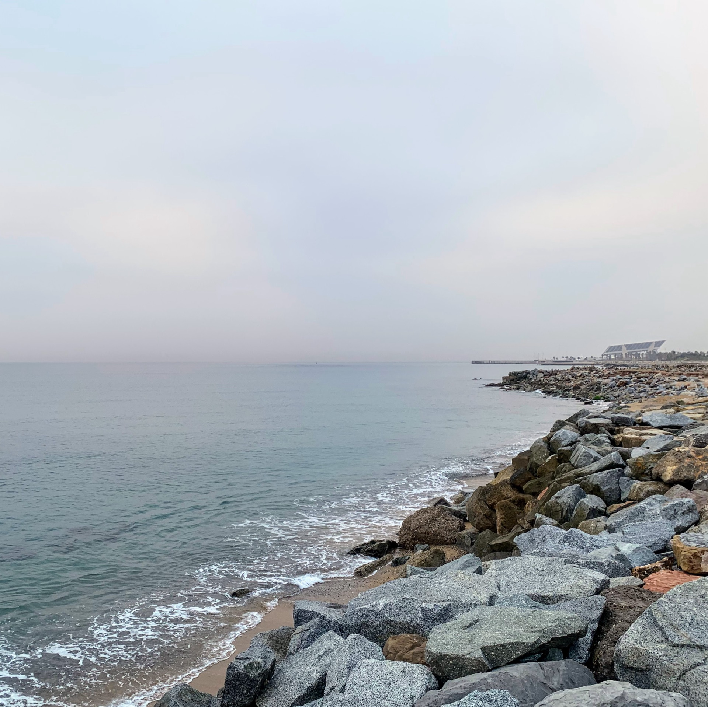
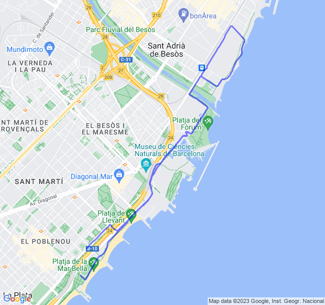
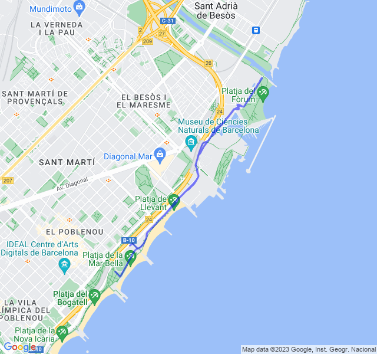
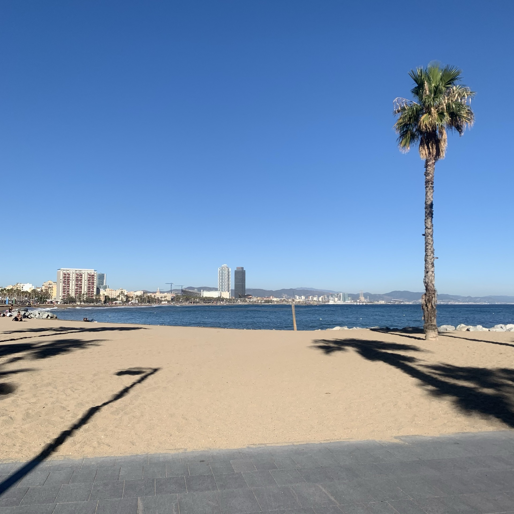
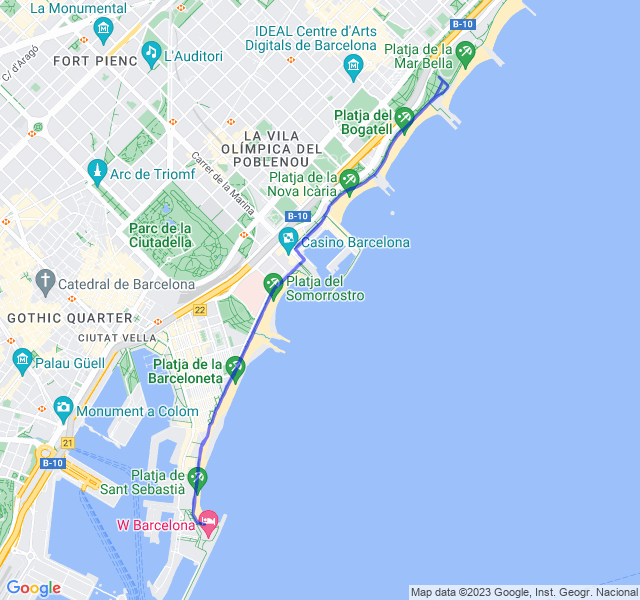
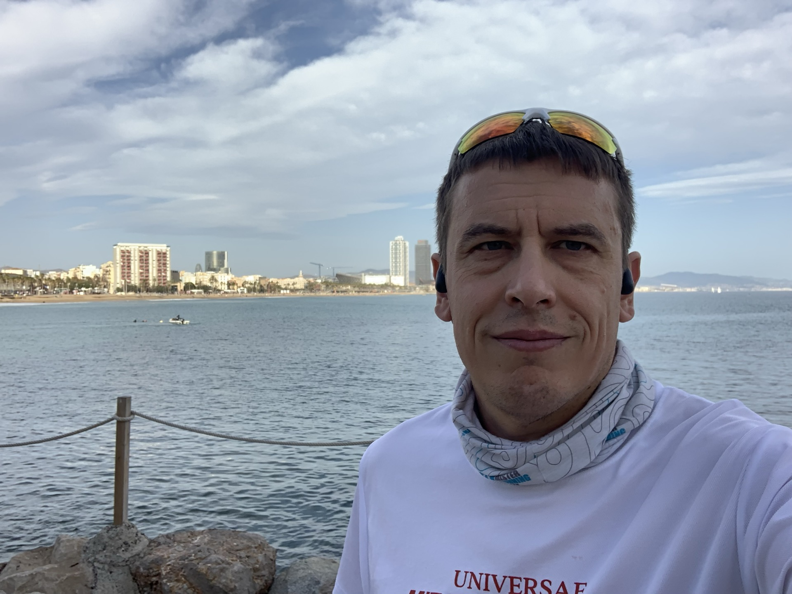
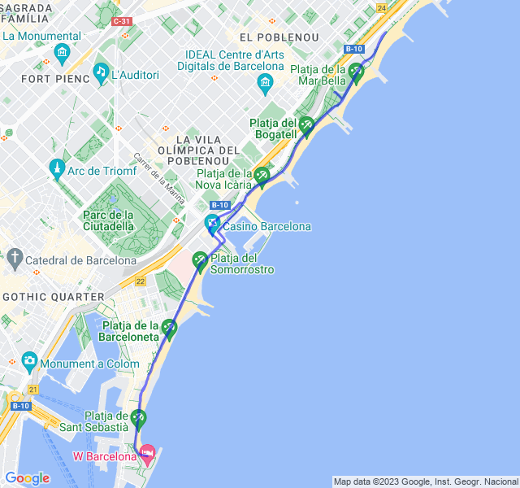
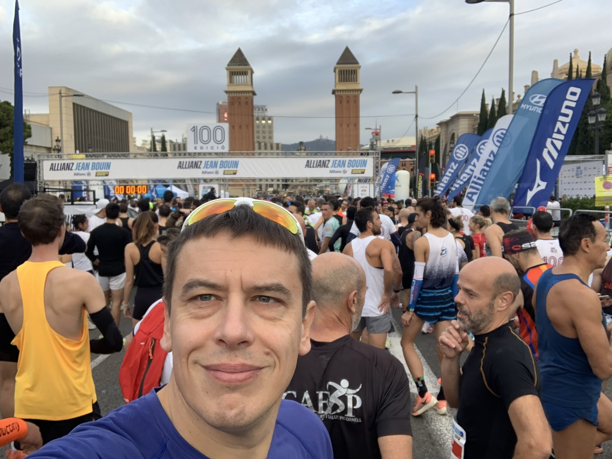
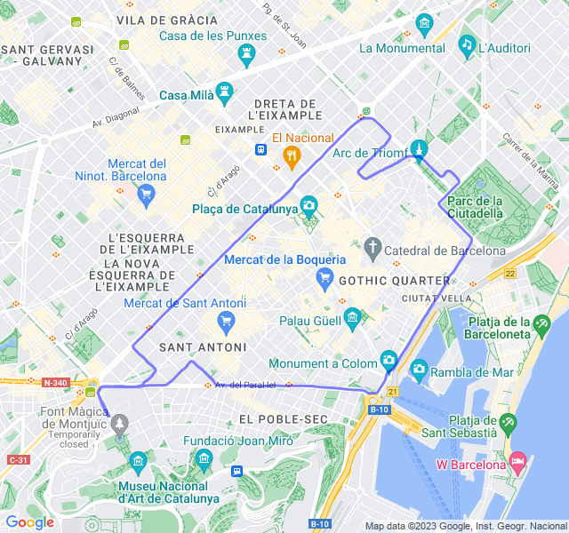

Settimana 47
Prima uscita

10km Z2. Settimana scorsa, dopo il rosso del martedì, come la mia HRV aveva previsto, mi sono ammalato: due giorni di febbre. Ho saltato il potenziamento del mercoledì e le due uscite di giovedì e venerdì. Domenica uscita easy di 8km giusto per vedere come andava. Ed eccoci a oggi. Z2 un po' strana: ho fatto fatica a far salire la FC; nonostante il buon passo son stato la maggior parte in Z1. Domani rosso, vediamo come va

Seconda uscita

10x150m Z5. Tutto tranquillo. Come già altre volte in questi allenamenti corti la Z5 non la raggiungo mai, nonostante il buon ritmo (anche sotto Z5).

Terza uscita

8km Z2. Un po' troppa Z3 ma la FC non voleva stare al suo posto! 😡

Quarta uscita
8km Z1. Anche oggi FC alta e allenamento quasi tutto in Z2. Speriamo bene per la gara!


Quinta uscita

10K Allianz Jean Bouin 2023. Che dire se non che grazie ai coach dopo 5 anni sono tornato sotto i 40 minuti con anche un PB inaspettato! Pensavo di essere abbastanza vicino ai 40 ma credevo che il percorso, con l'ultimo km il leggera salita, mi avrebbe stroncato per bene e invece, una bella fatica su quel falsopiano ma sono riuscito a tenere abbastanza bene. Per l'occasione ho anche provato per la prima volta il PacerPro di Garmin e non è stato male avere un'idea di quali fossero i tratti dove spingere un po' di più e quelli dove rallentare per non scoppiare. Daje, ora un bel periodo di allenamento prima della prossima mezza! 🥳 🥳
